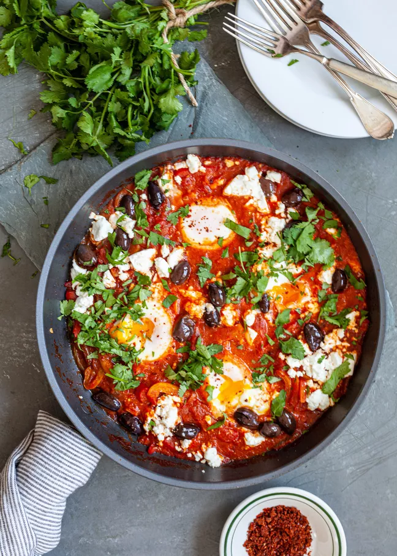
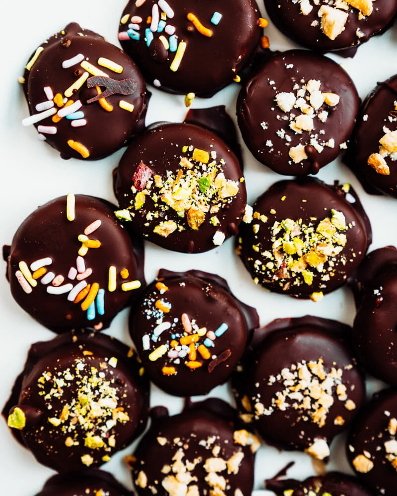
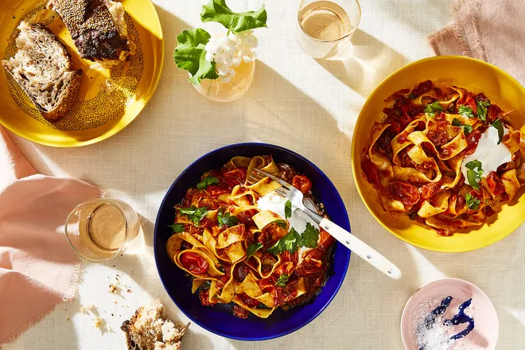

Recipes

Shakshuka, a dish of eggs poached in a spicy tomato sauce, has its origins in North Africa, but
it has migrated to the Middle East and is now pretty much known all over the world, especially
in Israel, where it is practically a national specialty.

Chocolate Covered Bananas! The crunch of a crisp dark chocolate coating around an icy banana
makes magic. Here’s the new thing for us: making small chocolate covered banana bites! It gives
you a healthy treat in the freezer anytime a chocolate craving hits.

This pasta uses several of Ottolenghi's pantry ingredients listed in SIMPLE—rose harissa, dried
pasta, yogurt, capers, olives—and comes together in just about 30 minutes. It's a weeknight
dinner hero, and the sauce can be doubled and stored in the fridge for up to 3 days (or much
longer than that in the freezer).